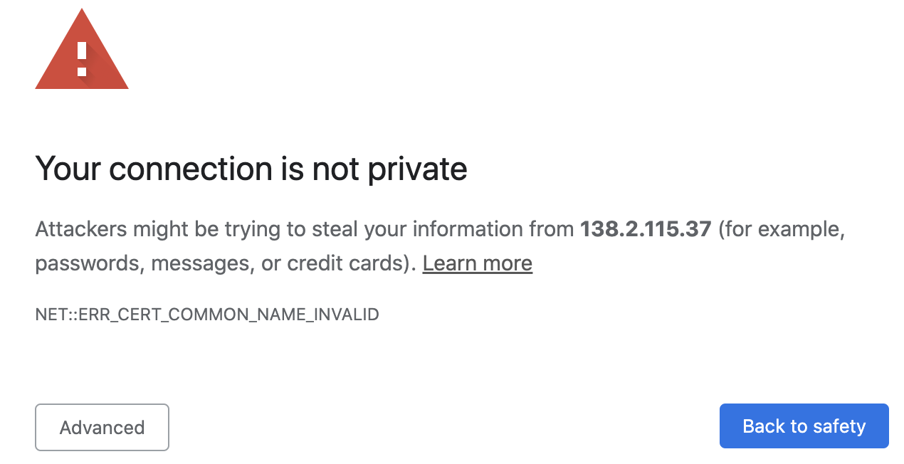
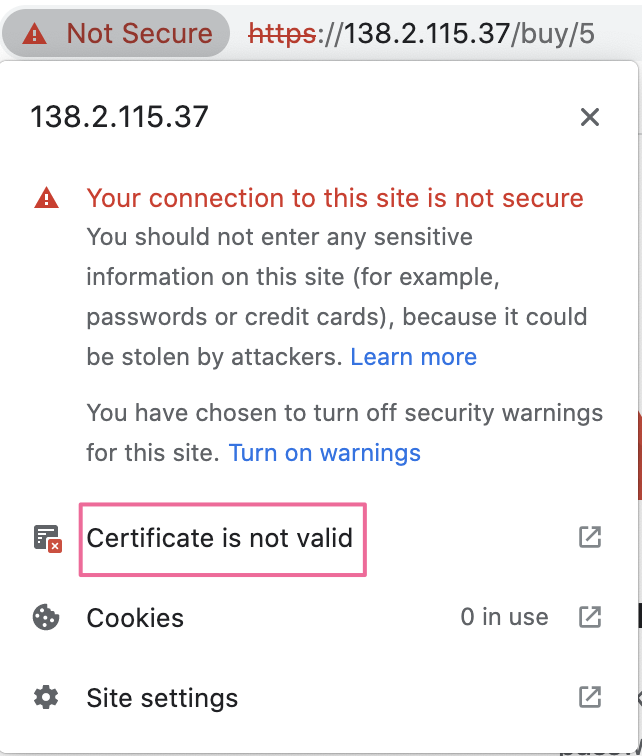
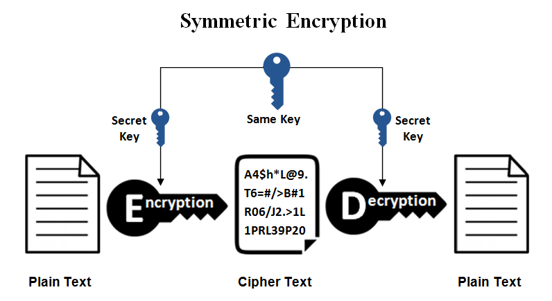
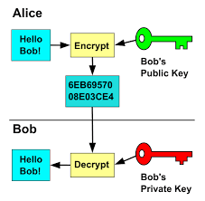
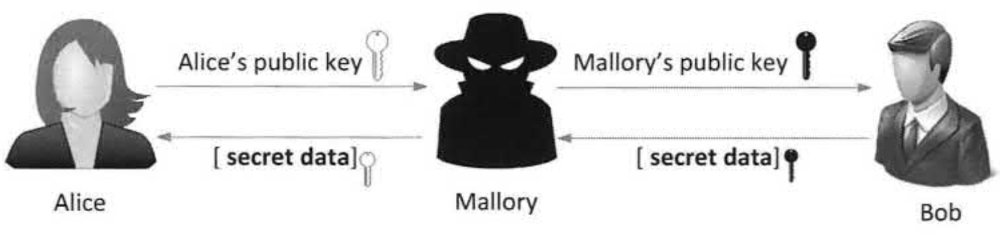
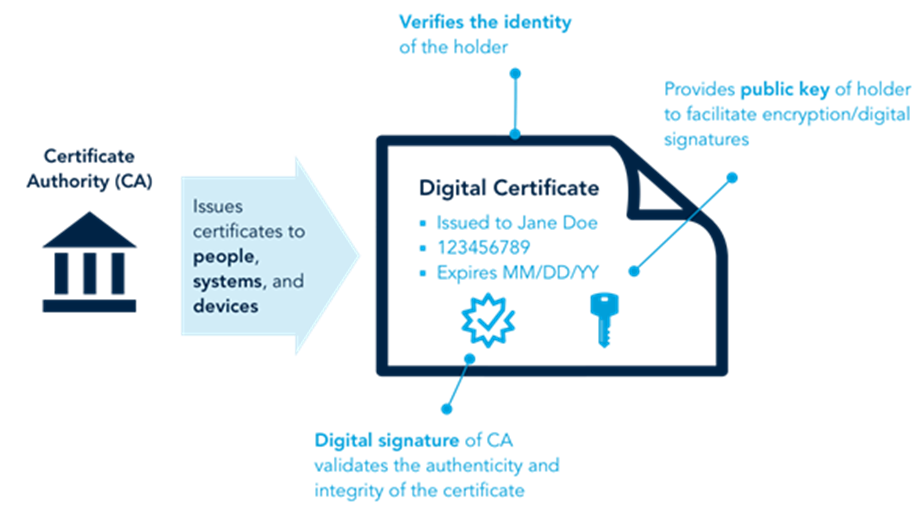
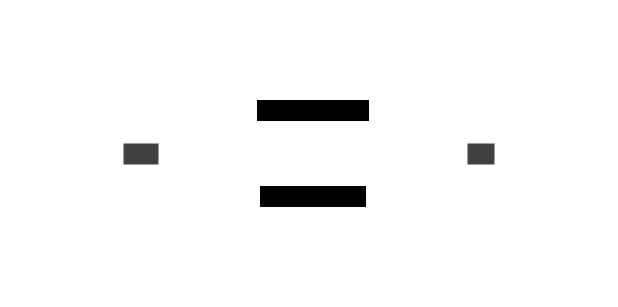

a short tour of asymmetric cryptography from certificate
Tian Zhuoyu
Created: 2023-06-19 Mon 11:23
situation
The problem: Your connection is not private

For example, this site.
Certicate is not valid

Certificate is not valid.
But what is a certificate?
asymmetric encryption
Why do we need encryption?
Why do we need encryption? Because the Internet is not secure at all.
Let's assume that the two parties communicating are Alice and Bob, and Eve is a malicious third party trying to eavesdrop on their communication.
Before Alice sends a message to Bob, she encrypts the message to create ciphertext. Bob decrypts the ciphertext to obtain the message after receiving it.
symmetric encryption

Symmetric encryption: encrypt and decrypt data with the same key, so the sender and receiver have the same key.
The problem of symmetric encryption: how to transfer a key safely? That's the motivation for asymmetric encryption.
Asymmetric encryption
Asymmetric encryption uses key pairs for encryption and decryption. key pair=(public key, private key).
The public key is used for encryption, and the private key is used for decryption. Public key should be shared with senders, secret key shouldn't be told anyone.

Even if Eve intercepts public keys of Alice and Bob, it doesn't matter because public keys are used for encryption not decryption. Eve cannot intercept private keys because private keys will never be sent.
In asymmetric encryption, there's no need to distribute the private key, and there's no need to worry about the public key being intercepted.

Problem with asymmetric encryption: MITM
things are not perfect

Asymmetric encryption still poses a potential risk of man-in-the-middle attacks.
example


the problem
When you receive a public key claiming to be Alice's, how can you make sure it is actually Alice's public key and not the public key of a man-in-the-middle attacker?
That's when certificates come into play.
CA and digital certificates
certificate
certificate=subject's public key+digital signature of CA (Certificate Authority)
Digital signatures ensure the authenticity of the content of the certificate.
The certificate proves that Alice's public key is indeed hers.
Just like driver's license.

now
Now instead of sending public keys, they send their own certficates.

Even if Eve intercepts the certificates, she can do nothing.

back to the website
If the website do not have a certificate issued by a CA, it could be a phishing website (钓鱼网站) or a legitimate website that hasn't yet applied for a certificate from the CA
A legitimate website without a certificate is still insecure. Your communication may be vulnerable to a man-in-the-middle attack. You should not send any sensitive information, such as passwords.